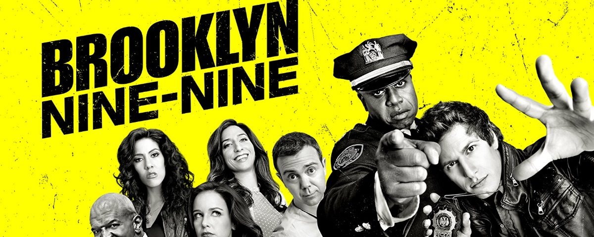

Temporadas
Temporadas
1ª Temporada
A primeira temporada de Brooklyn Nine-Nine conta com 22 episódios de comédia policial. Esta teve produção nos anos de 2013-2014.
Ep. 1 : Piloto - Quando o sempre tenso capitão Holt assume a delegacia, a vida despreocupada do detetive Jake Peralta e de seus colegas problemáticos fica difícil.
Ep. 2 : Bem Acompanhado - Jake chega tarde para a chamada e é punido com um caso sem importância de pichação.
Ep. 3 : No Limbo - Os casos não resolvidos de Jake se acumulam, e os outros detetives temem essa maré de azar. Amy precisa entrar em um projeto para jovens em situação de risco.
Ep. 4 : Novo Relacionamento - A equipe culpa Jake pelo atraso do relatório da autópsia devido às suas paqueras com a atraente médica legista.
Ep. 5 : O Abutre - Um detetive renomado da Crimes Especiais assume o caso de Jake e rouba a cena, incitando desejos de vingança.
Ep. 6 : Halloween - Amy detesta o Halloween e fica ainda mais irritada quando tem que vestir uma fantasia para sair com Charles nesta noite tão animada.
Ep. 7 : 48 Horas - Após uma prisão mal fundamentada, Jake tem 48 horas para conseguir as provas necessárias. Isso obriga a equipe a trabalhar no final de semana.
Ep. 8 : Velha Guarda - O dia dos sonhos de Jake com seu herói, um ex-repórter policial, transforma-se em pesadelo quando seus comentários sobre Holt e a delegacia são gravados.
Ep. 9 : Incêndio na Pizzaria - Quando sua pizzaria favorita pega fogo e o investigador suspeita do proprietário, Jake sai de sua jurisdição para pegar o verdadeiro responsável.
Ep. 10 : Ação de Graças - Amy organiza um jantar de Ação de Graças para tentar fazer Holt ser seu mentor, mas nem tudo sai como planejado.
Ep. 11 : Natal - Quando o capitão Holt recebe ameaças de morte, Jake é destacado para sua proteção e se diverte com a chance de mandar no chefe.
Ep. 12 : O Acordo - Jake e Rosa perseguem um ladrão de carros, Holt tenta achar um lar para cãezinhos, e o resto da delegacia tenta acomodar Charles, que está ferido.
Ep. 13 : A Aposta - Após a aposta com Amy sobre quem faz mais prisões ser finalmente resolvida, Jake reavalia seu relacionamento enquanto estão de tocaia.
Ep. 14 : Missão Secreta - De volta ao trabalho, Terry procura Jake para se infiltrar e desbaratar uma quadrilha de tráfico de esteroides.
Ep. 15 : A Mudança - Durante as investigações de uma sequência de roubos em hotéis, Jake descobre que Amy pode ser transferida para a Crimes Especiais e passar a trabalhar com o Abutre.
Ep. 16 : Festa de Aniversário - Na festa de aniversário do capitão, Jake, Amy e os outros funcionários tentam causar boa impressão no marido dele.
Ep. 17 : Com Tudo - Para impedir o detetive Boyle de ser tão grudento com sua nova namorada, Jake também vai ao encontro deles.
Ep. 18 : O Apartamento - O prédio de Jake vira uma cooperativa. Ele tem que pagar quase meio milhão de dólares para manter seu apartamento e pede ajuda a Gina.
Ep. 19 : Viciado - Durante uma competição entre delegacias em exercícios de paintball, Jake sente ciúmes quando Amy encontra um antigo amor.
Ep. 20 : Novas Atitudes - Como padrinho de Charles, Jake tem que escolher flores e convencer a noiva a não se mudar.
Ep. 21 : Um Caso Difícil - Jake decide passar o fim de semana com o sargento Terry tentando resolver um caso que todos consideram insolúvel.
Ep. 22 : A Demissão - Jake se arrisca a ser suspenso quando o delegado encerra sua investigação de um líder civil e ele chama Amy e Holt para ajudá-lo a seguir com o caso assim mesmo.
2ª Temporada
A primeira temporada de Brooklyn Nine-Nine conta com 23 episódios. Esta teve produção nos anos de 2014-2015.
Ep. 1 : Infiltrado - Jake descobre que um mafioso escapou de sua emboscada e pede ajuda a Charles para encontrá-lo, o que deixa Gina preocupada.
Ep. 2 : Achocolatado - A rival de Holt é encarregada de inspecionar a delegacia. Terry se prepara para uma vasectomia, e Charles busca uma companhia para a festa de noivado da ex-mulher.
Ep. 3 : A Competição - A equipe cria uma competição maluca enquanto aguarda o começo de uma operação. Charles precisa conseguir um vídeo incriminador de Hitchcock.
Ep. 4 : Halloween 2 - Jake aposta com Holt que consegue roubar o relógio dele antes da meia-noite. Gina é expulsa da equipe de dança.
Ep. 5 : O Infiltrado - Holt e Jake tentam descobrir quem é o responsável por um vazamento de informações. Terry e Rosa vão a uma discoteca silenciosa para encontrar os traficantes.
Ep. 6 : Jake e Sophia - Jake descobre que a mulher de quem ele gosta é a advogada de um de seus suspeitos. Rosa quer que Amy concorra ao cargo de Scully no sindicato.
Ep. 7 : Fora de Controle - A equipe fica confinada na delegacia durante o feriado de Ação de Graças, e cabe a Jake animar os colegas.
Ep. 8 : Parceria Temporária - Para capturar um traficante, Jake e Charles precisam trabalhar com um colega incompetente. A equipe ajuda Amy a parar de fumar.
Ep. 9 : O Convite - Jake e Amy passam a noite em um hotel para resolver um caso e chamam seus respectivos parceiros, mas o plano não sai bem como esperado.
Ep. 10 : Novo Acordo - Jake e Rosa pegam o bandido do Pontiac, que pode ser a chave para a captura do líder do tráfico. Charles e Gina temem a aproximação de seus pais.
Ep. 11 : Emboscada - Jake e Charles participam de uma emboscada muito demorada. O livro que Terry escreve para as filhas irrita Amy e Gina.
Ep. 12 : Casa de Praia - Jake acaba com a diversão na festa da praia quando leva o Capitão Holt. Gina quer ver Amy bêbada.
Ep. 13 : O Segredo - Jake faz de tudo para impedir que o resto da delegacia descubra um segredo de Terry. Amy finalmente trabalha junto com o capitão Holt.
Ep. 14 : O Descanso da Defesa - Jake tenta impedir que sua relação com Sophia atrapalhe o trabalho dela. Wuntch pede ajuda a Holt.
Ep. 15 : Combate a Terroristas - A equipe é convidada para um treinamento antiterrorismo, mas desempenhar o papel de reféns não vai ser nada fácil.
Ep. 16 : Em Plena Quarta-Feira - Jake está determinado a provar que não é o culpado pelo mau humor de Holt. Charles captura um famoso ladrão de bancos, mas ninguém acredita nele.
Ep. 17 : Bodas - Toda a equipe tem muito o que fazer no dia do casamento, mas Jake e Gina se distraem e Terry acaba em apuros.
Ep. 18 : Capitão Peralta - O pai de Jake faz uma visita, mas Charles suspeita de suas intenções. Holt lança um desafio de raciocínio.
Ep. 19 : Sabotagem - Holt coloca Amy e Rosa para investigar a má sorte de Jake. Charles trabalha com Hitchcock e Scully.
Ep. 20 : O Jantar - Terry obriga Jake a se afastar do trabalho depois de ter se ferido em uma perseguição. Holt, Rosa e seus parceiros saem juntos.
Ep. 21 : Detetive Rival - Outro detetive se interessa por Amy e deixa Jake com ciúme. Terry fica tentado a aceitar um emprego em uma empresa de segurança particular.
Ep. 22 : O Helicóptero - Holt acredita que o trabalho dos sonhos que Wuntch deu a Jake é uma cilada. Terry recebe uma viagem de campo de uma escola.
Ep. 23 : Jhonny e Dora - Jake e Amy se disfarçam para capturar um famoso ladrão de identidades. Uma despedida inesperada emociona a equipe.
3ª Temporada
A primeira temporada de Brooklyn Nine-Nine conta com 23 episódios. Esta teve produção nos anos de 2015-2016.
Ep. 1 : Novo Capitão - O novo capitão já chega à delegacia causando. Jake e Amy tentam manter seu caso em segredo.
Ep. 2 : O Funeral - Mais mudanças na delegacia ameaçam a relação entre Jake e Amy. Uma série de decepções deixa Holt abalado.
Ep. 3 : O Palpite do Boyle - Seduzido por uma mulher que também ama a boa cozinha, Boyle promete provar sua inocência e libertá-la. Holt tenta melhorar a imagem da polícia, mas o tiro sai pela culatra.
Ep. 4 : Assassino do Chá - Jake e Holt se aliam em segredo para pegar um serial killer. Amy e Rosa se vingam de uma tarefa sexista.
Ep. 5 : Halloween 3 - Na competição de Halloween, Jake e Holt formam times para roubar uma coroa. Mas Amy é deixada de fora.
Ep. 6 : Caminhos da Floresta - Jake e Charles levam Terry para um acampamento desastroso. Holt ajuda Rosa com um dilema, e Amy tenta lucrar com uma invenção antiga.
Ep. 7 : O Colchão - Jake e Amy embarcam em uma disputa de casal enquanto investigam o surgimento de uma nova droga. Um incidente na garagem provoca uma discussão entre Holt e Boyle.
Ep. 8 : Ava - Jake age rápido quando a mulher de Terry entra em trabalho de parto. Um apagão na internet obriga a equipe a usar métodos de trabalho antigos.
Ep. 9 : Os Suécos - O clima esquenta quando Jake e Rosa dividem uma missão com um casal de policiais suecos. Neil deGrasse Tyson ajuda Gina a se preparar para um exame.
Ep. 10 : Toma Essa - Uma saída de última hora para compras de Natal deixa Jake, Gina e Charles no meio do que parece uma cena de "Duro de Matar", com reféns e tudo.
Ep. 11 : Reféns Inusitados - Boyle tenta recuperar um "artigo” muito pessoal dele que ficou com a sua assustadora ex-mulher. Terry é ferido por Amy no pior momento possível.
Ep. 12 : Nove Dias - Uma doença deixa Jake e Holt de quarentena enquanto tentam resolver um caso já arquivado. Terry descobre que administrar a delegacia é um trabalho complicado.
Ep. 13 : O Cruzeiro - Jake e Amy vão fazer um cruzeiro romântico e descobrem um antigo adversário a bordo. Holt prepara-se para a visita da irmã melodramática.
Ep. 14 : Karen Peralta - Amy prepara-se para conhecer a mãe de Jake no aniversário dele, mas a festa toma um rumo inesperado. Novas câmeras deixam Boyle constrangido.
Ep. 15 : A 9-8 - Os ânimos se exaltam quando a delegacia vizinha se junta à 99. Jake reencontra um parceiro antigo e tem uma surpresa desagradável.
Ep. 16 : Ratos de Casa - Para atuar em uma ocorrência envolvendo celebridades, Jake deixa uma apreensão de drogas para Scully e Hitchcock. Mas nenhum dos casos é o que eles esperavam.
Ep. 17 : Adrian Pimento - Um policial que estava infiltrado na máfia tem dificuldades de se readaptar à vida na delegacia. As aventuras culinárias de Boyle enfurecem a equipe de limpeza.
Ep. 18 : Cheddar - Jake e Amy se oferecem para tomar conta da casa de Holt, e as consequências são desastrosas. O clima entre Rosa e Pimento esquenta.
Ep. 19 : Gatinhos do Terry - Uma entrega especial relembra Terry de um caso que o assombra há anos. Com a ajuda de Jake, ele faz de tudo para finalmente resolvê-lo.
Ep. 20 : Paranoia - Um noivado às pressas provoca uma correria para a organização das despedidas de solteiro e solteira. Mas a noite de festas não acaba como esperado.
Ep. 21 : Segurança Máxima - Para desmascarar o agente duplo do FBI que contratou a morte de Pimento, a equipe organiza um funeral falso e envia Amy numa missão de risco.
Ep. 22 : FBI - Com a ajuda de um velho amigo de Holt, o grupo entra no FBI para descobrir os podres de um agente duplo. Uma detenta deixa Charles numa situação difícil.
Ep. 23 : Greg e Larry - Jake e a equipe vasculham o hospital em busca do capitão Holt. Amy e Charles viajam de volta a Nova York para ajudar os amigos.
Temporadas 1, 2 e 3